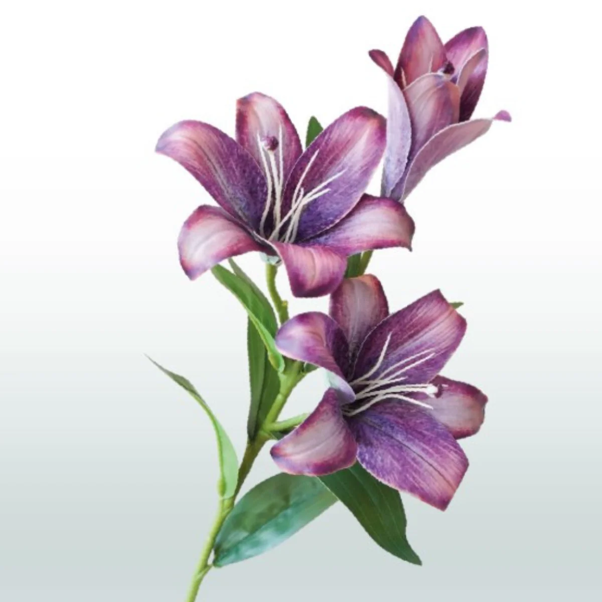

Flower bouquet ❤️🌹
| Name of rose: |
Lily |
Rose |
Violet |
| Availibility: |
No |
Yes |
Yes |
Options of Purchase:
~Bouquets
~Baskets

Biological Function and Structure
At their core, flowers are the reproductive organs of angiosperms,
designed to facilitate the production of seeds. A
typical flower is composed of four main layers, or "whorls": the protective outer sepals (calyx), the attractive
petals
(corolla), the male stamens (androecium), and the female pistils (gynoecium). Through diverse traits like bright
colors
and sweet nectar, they attract pollinators such as bees, butterflies, and birds, ensuring genetic diversity and
ecosystem stability.
The Global Floral Industry
Economically, the cultivation and trade of flowers—known as floriculture—is a
multibillion-dollar global market. As of
2023, the global flower market was valued at approximately $32 billion, with the cut flower segment alone
projected to
reach over $53 billion by 2030. Major cultural holidays like Valentine's Day and Mother’s Day can account for up
to 40%
of a florist's annual revenue. Beyond gifting, flowers are vital raw materials for the perfume, cosmetic, and
pharmaceutical industries, where they are processed into essential oils, natural dyes, and medicinal extracts.
Form for purchase of items
Cultural and Psychological Impact
Throughout history, humans have used flowers to communicate complex emotions, a practice formalized in the Victorian era
as floriography, or the "language of flowers". Different cultures assign varying meanings to blooms; for example, the
lotus represents rebirth and enlightenment in Eastern traditions, while the red rose is a universal symbol of romantic
love in the West. Beyond symbolism, the presence of flowers has a documented positive effect on mental health, often
reducing stress and increasing feelings of happiness and life satisfaction.
Culinary and Medicinal Traditions
Beyond their beauty, flowers have been a staple of human diets and medicine for thousands of years. Ancient Romans
infused roses and violets into wines and desserts, while traditional Chinese and Ayurvedic medicine utilize blooms like
chrysanthemums and lotus for their anti-inflammatory and antioxidant properties. Modern "gourmet" cooking has seen a
resurgence in edible flowers, such as squash blossoms or the color-changing blue pea flower. However, safety is
paramount; many common garden flowers are toxic, and only those grown specifically for consumption without pesticides
should be eaten.